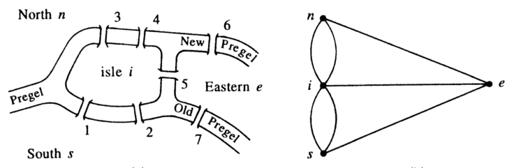
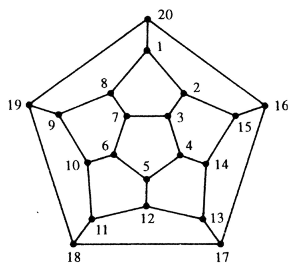
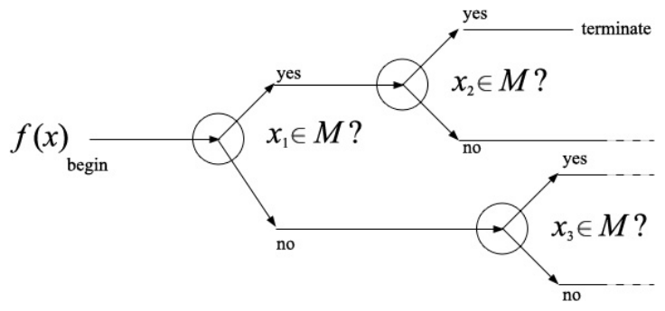

Chương 3 — Các bậc phức tạp của tính toán khả tính số
Chương 3
Các Bậc Độ phức tạp của Tính khả tính
Số
Chương này trước tiên giới thiệu các bậc của tính khả tính Turing, được đo bằng thời gian tính toán tương ứng để giải bài toán. Sau đó, sự phân biệt được thực hiện giữa các bài toán P và NP, chẳng hạn. Những bài toán này về mặt lý thuyết có thể giải được trong khuôn khổ của tính khả tính Turing. Tuy nhiên, do thời gian tính toán lớn, chúng không thể được hiện thực hóa trên thực tế trên các máy tính số kỹ thuật (ví dụ, các bài toán NP). Vượt ra ngoài tính khả tính Turing, tính khả tính số có thể được mở rộng về mặt lý thuyết trong phân cấp số học và phân cấp giải tích. Chính Turing đã giới thiệu mô hình lý thuyết về máy tiên tri (oracle machine) cho tính khả tính số mở rộng. Điều này cho phép phân biệt về mặt lý thuyết các bậc độ phức tạp của việc giải quyết bài toán toán học vượt ra ngoài tính khả tính Turing. Tuy nhiên, về mặt kỹ thuật và thực tiễn, chỉ những bài toán khả tính Turing mới có thể được hiện thực hóa trên các máy tính số.
Theo luận đề Church, tính khả tính Turing là một định nghĩa đại diện cho tính khả tính nói chung. Trong phần tiếp theo, chúng ta muốn xem xét các bài toán có bậc độ phức tạp dưới và vượt trên giới hạn này. Dưới giới hạn này, có nhiều bài toán thực tiễn liên quan đến những hạn chế nhất định về mức độ có thể tăng tốc độ của một thuật toán. Đặc biệt trong số các bài toán toán học, có một số lớp bài toán về bản chất khó giải quyết bằng thuật toán hơn những lớp khác. Do đó, có các bậc tính khả tính đối với máy Turing được làm chính xác hóa trong lý thuyết độ phức tạp của khoa học máy tính.
55
56 Trí tuệ Nhân tạo của Các hệ thống Phỏng thần kinh
Các lớp độ phức tạp của các bài toán (hoặc các hàm tương ứng) có thể được đặc trưng bởi các bậc độ phức tạp, vốn cho biết bậc của các hàm mô tả thời gian tính toán (hoặc số bước tính toán sơ cấp) của các thuật toán (hoặc chương trình tính toán) phụ thuộc vào độ dài đầu vào của chúng. Độ dài đầu vào có thể được đo bằng số chữ số thập phân. Theo ngôn ngữ máy của máy tính, sẽ thuận tiện khi biểu diễn các số thập phân dưới dạng mã nhị phân chỉ với các số nhị phân 0 và 1, và định nghĩa độ dài của chúng bằng số chữ số nhị phân. Ví dụ, số 3 có mã nhị phân 11 = 1 · 21 + 1 · 20 với độ dài là 2.
Định nghĩa Thời gian Tính toán Tuyến tính
Một hàm có thời gian tính toán tuyến tính nếu thời gian tính toán của f không lớn hơn c · n đối với mọi đầu vào có độ dài n và một hằng số c.
Ví dụ về thời gian tính toán tuyến tính
Phép cộng hai số (nhị phân) rõ ràng chỉ có thời gian tính toán tuyến tính. Ví dụ, phép tính 3 + 7 = 10 tương ứng với phép tính nhị phân
001 111 1010 cần năm bước tính toán sơ cấp để cộng hai chữ số nhị phân (bao gồm cả việc nhớ). Chúng tôi nhắc lại cho bạn đọc rằng các bước sơ cấp của phép cộng các chữ số nhị phân là 0 + 0 = 0, 0 + 1 = 1, 1 + 0 = 1, 1 + 1 = 1, và nhớ. Sẽ thuận tiện nếu giả sử rằng hai số cần cộng có độ dài bằng nhau. Nếu không, chúng ta chỉ cần bắt đầu số ngắn hơn bằng một loạt các số không, ví dụ, 111 và 011 thay vì 11. Nhìn chung, nếu độ dài của một cặp số cụ thể cần cộng là n, độ dài của một số là n
2, và do đó, chúng ta cần không quá n 2 + n 2 = n bước tính toán sơ cấp bao gồm cả việc nhớ.
Các Bậc Độ phức tạp của Tính khả tính Số 57
Định nghĩa Thời gian Tính toán Bậc hai
Một hàm f có thời gian tính toán bậc hai nếu thời gian tính toán của f không lớn hơn c · n2 đối với mọi đầu vào có độ dài n và một hằng số c.
Ví dụ về thời gian tính toán bậc hai
Một ví dụ đơn giản về thời gian tính toán bậc hai là phép nhân hai số (nhị phân). Ví dụ, phép tính 7 · 3 = 21 tương ứng với phép tính nhị phân:
111 · 011 000 111 111 10101
Theo các quy ước trước đây, chúng ta có n = 6. Số phép nhân nhị phân sơ cấp là n
2 · n 2 = n2 4 . Bao gồm cả việc nhớ, số phép cộng nhị phân sơ cấp là n
2 · n 2 −n 2 = n2 4 −n 2 . Tổng cộng, chúng ta có n2
4 + n2 4 −n 2 = n2 2 −n 2 , nhỏ hơn n2 2 .
Định nghĩa Thời gian Tính toán Đa thức và Hàm mũ
• Một hàm f có thời gian tính toán đa thức nếu thời gian tính toán của f không lớn hơn c · nk, được giả sử là số hạng bậc cao nhất của một đa thức p(n). • Một hàm f có thời gian tính toán hàm mũ nếu thời gian tính toán của f không lớn hơn c · 2p(n). • Nhiều bài toán thực tiễn và lý thuyết thuộc về lớp độ phức tạp P gồm tất cả các hàm có thể được tính bởi một máy Turing tất định trong thời gian đa thức.
Trong lịch sử toán học, có một số bài toán hay của lý thuyết đồ thị minh họa các khái niệm cơ bản của lý thuyết độ phức tạp (Grötschel và cộng sự, 1988).
58 Trí tuệ Nhân tạo của Các hệ thống Phỏng thần kinh
Độ phức tạp của Bài toán Sông Königsberg của Euler
Năm 1736, nhà toán học nổi tiếng Leonard Euler (1707–1783) đã giải quyết một trong những bài toán đầu tiên của lý thuyết đồ thị. Tại thành phố Königsberg, thủ phủ của Đông Phổ, hai nhánh sông được gọi là Pregel Cũ và Pregel Mới hợp lưu thành sông Pregel. Vào thế kỷ 18, có bảy cây cầu nối các khu vực phía nam s, phía bắc n, và phía đông e với hòn đảo i (Hình 1(a)). Liệu có một lộ trình nào đi qua mỗi cây cầu đúng một lần và quay trở lại điểm xuất phát hay không?
Euler đã quy bài toán về lý thuyết đồ thị. Các khu vực n, s, l, e được thay thế bằng các đỉnh của một đồ thị và các cây cầu giữa hai khu vực bằng các cạnh giữa các đỉnh tương ứng (Hình 1(b)).
Trong ngôn ngữ của lý thuyết đồ thị, bài toán của Euler là liệu với mọi đỉnh có tồn tại một lộ trình (một “chu trình Euler”) đi qua mỗi cạnh đúng một lần, cuối cùng quay trở lại điểm xuất phát hay không. Đối với các đồ thị tùy ý, Euler đã chứng minh rằng một chu trình Euler tồn tại khi và chỉ khi mỗi đỉnh có một số chẵn các cạnh (“điều kiện Euler”). Vì đồ thị ở Hình 1(b) không thỏa mãn điều kiện này, nên không thể có lời giải cho bài toán của Euler trong trường hợp này. Nhìn chung, có một thuật toán kiểm tra một đồ thị tùy ý theo điều kiện Euler xem nó có phải là một chu trình Euler hay không. Đầu vào của thuật toán bao gồm tập hợp V tất cả các đỉnh 1, . . . , n và tập hợp E tất cả các cạnh, vốn là một tập con của tập hợp tất cả các cặp đỉnh. Thời gian tính toán của thuật toán này phụ thuộc tuyến tính vào kích thước của đồ thị, được định nghĩa bằng tổng số đỉnh và số cạnh.

(a) (b)
Hình 1. Bài toán sông Königsberg của Euler (Mainzer, 2018, tr. 35).
Các Bậc Độ phức tạp của Tính khả tính Số 59
Độ phức tạp của Bài toán Hamilton
Năm 1859, nhà toán học William Hamilton (1805–1865) đã giới thiệu một bài toán khá tương tự nhưng phức tạp hơn nhiều so với bài toán của Euler (Mainzer, 2007, tr. 189–190). Hamilton xem xét một đồ thị tùy ý, tức là không gì khác ngoài một tập hợp hữu hạn các đỉnh, trong đó một số cặp đỉnh nhất định được nối với nhau bằng các cạnh. Bài toán của Hamilton là liệu có tồn tại một chu trình khép kín (một “chu trình Hamilton”) đi qua mỗi đỉnh (chứ không phải mỗi cạnh như trong bài toán của Euler) đúng một lần hay không. Hình 2 cho thấy một đồ thị có chu trình Hamilton đi qua các đỉnh theo thứ tự đánh số.
Tuy nhiên, không giống như trường hợp bài toán của Euler, chúng ta không biết bất kỳ điều kiện nào đặc trưng hóa chính xác việc một đồ thị có chứa chu trình Hamilton hay không. Chúng ta chỉ có thể định nghĩa một thuật toán kiểm tra xem một đồ thị tùy ý có chứa chu trình Hamilton hay không. Thuật toán kiểm tra tất cả các hoán vị của các đỉnh để xem liệu chúng có tạo thành một chu trình Hamilton hay không. Vì có n! hoán vị khác nhau của n đỉnh, thuật toán không cần quá c · n! bước với một hằng số c để tìm ra lời giải. Có thể dễ dàng chứng minh rằng một

Hình 2. Bài toán Hamilton (Mainzer, 2018, tr. 37).
60 Trí tuệ Nhân tạo của Các hệ thống Phỏng thần kinh bậc của n! tương ứng với một bậc của nn. Do đó, một thuật toán cho bài toán Hamilton cần thời gian tính toán hàm mũ, trong khi bài toán Euler có thể được giải bằng thuật toán trong thời gian tính toán tuyến tính. Vì vậy, bài toán Hamilton không thể được giải trên thực tế bởi máy tính ngay cả đối với các số n nhỏ.
Lý do chính dẫn đến thời gian tính toán cao có thể là do một số lượng lớn các trường hợp con đơn lẻ phải được kiểm tra bởi một máy tính tất định vốn được phép chọn ngẫu nhiên một thủ tục tính toán trong số một số hữu hạn các thủ tục có thể có thay vì thực hiện chúng từng bước một cách tuần tự. Hãy xem xét lại bài toán Hamilton. Một đồ thị đầu vào có thể có n đỉnh v1, . . . , vn. Một thuật toán không tất định chọn một thứ tự nhất định vi1, . . . , vin của các đỉnh theo cách ngẫu nhiên, không tất định. Sau đó, thuật toán kiểm tra xem thứ tự này có tạo thành một chu trình Hamilton hay không. Câu hỏi là liệu với mọi số j (j = 1, . . . , n −1), các đỉnh liên tiếp vij và vij+1 cùng đỉnh đầu và đỉnh cuối vin và vi1 có được nối với nhau bởi một cạnh hay không. Thời gian tính toán của thuật toán không tất định này phụ thuộc tuyến tính vào kích thước của đồ thị.
Nhìn chung, NP có nghĩa là lớp độ phức tạp của các hàm có thể được tính bởi một máy Turing không tất định trong thời gian đa thức. Bài toán Hamilton là một ví dụ về bài toán NP. Một bài toán NP khác là “bài toán người bán hàng du lịch”, khá giống với bài toán Hamilton ngoại trừ việc các cạnh khác nhau có gắn các con số. Người ta tìm kiếm chu trình Hamilton mà tổng các con số, hay nói một cách trực quan hơn là quãng đường người bán hàng đi qua, là nhỏ nhất.
Liệu các Bài toán NP có thể Quy về các Bài toán P không?
Theo định nghĩa, mọi bài toán P đều là một bài toán NP. Nhưng một câu hỏi cốt lõi của lý thuyết độ phức tạp là liệu P = NP hay nói cách khác, liệu các bài toán được giải bởi máy tính không tất định trong thời gian đa thức có thể cũng được giải bởi máy tính tất định trong thời gian đa thức hay không.
Bài toán Hamilton và bài toán người bán hàng du lịch là những ví dụ về cái gọi là các bài toán NP-đầy đủ.
Các Bậc Độ phức tạp của Tính khả tính Số 61
Độ phức tạp của các Bài toán NP-Đầy đủ
Một bài toán được gọi là NP-đầy đủ nếu bất kỳ bài toán NP-đầy đủ nào khác đều có thể chuyển đổi thành nó trong thời gian đa thức.
Do đó, nếu một bài toán NP-đầy đủ thực sự được chứng minh là một bài toán P (chẳng hạn, nếu có thể xây dựng một thuật toán tất định để giải bài toán Hamilton trong thời gian đa thức), thì suy ra rằng mọi bài toán NP thực chất đều nằm trong P. Ngược lại, nếu P̸ = NP thì không có bài toán NP-đầy đủ nào có thể được giải bằng thuật toán tất định trong thời gian đa thức.
Rõ ràng, lý thuyết độ phức tạp cung cấp các bậc cho sức mạnh thuật toán của máy Turing hoặc các máy tính kiểu Turing. Lý thuyết này có những hệ quả thực tiễn đối với các ứng dụng khoa học và công nghiệp. Nhưng liệu nó có ngụ ý những giới hạn đối với toán học và tâm trí con người không? Các câu hỏi nền tảng của lý thuyết độ phức tạp (ví dụ, N = NP hoặc N̸ = NP) đề cập đến việc đo lường tốc độ, thời gian tính toán, dung lượng lưu trữ, v.v. của các thuật toán. Thế còn độ phức tạp của các bài toán toán học vượt ra ngoài tính khả tính Turing thì sao?
Tính khả liệt kê chỉ là bước đầu tiên trên một chiếc thang với độ phức tạp tính toán ngày càng tăng. Bằng cách thêm các lượng từ không bị giới hạn vào các vị từ đệ quy, các bậc tính khả tính có thể được mở rộng vượt ra ngoài tính khả tính Turing (Hinman, 1978; Kleene, 1955a; Shoenfield, 1967).
Định nghĩa Phân cấp Số học
Một vị từ P là số học khi và chỉ khi nó có một định nghĩa tường minh
(∗) P(x) ↔Q1 . . . QnR(x, x1, . . . , xn)
với mọi số x với R đệ quy và mỗi lượng từ số Qi là ∃xi hoặc ∀xi với các biến số xi.
Hai lượng từ là cùng loại nếu cả hai đều là lượng từ tồn tại hoặc cả hai đều là lượng từ phổ dụng. Hai lượng từ liền kề cùng loại có thể được thay thế bằng một lượng từ duy nhất (thu gọn lượng từ).
Một vị từ là Σ0
n(Π0 n) với n ≥1 khi và chỉ khi nó có một định nghĩa tường minh (*) không có hai lượng từ liền kề nào cùng loại và lượng từ đầu tiên
62 Trí tuệ Nhân tạo của Các hệ thống Phỏng thần kinh là tồn tại (phổ dụng), ví dụ, với mọi x
Σ0
2 : P(x) ↔∃x1∀x2R(x, x1, x2),
Π0
2 : P(x) ↔∀x1∃x2R(x, x1, x2).
Mọi vị từ số học đều là Σ0
n hoặc Π0 n với một số n ≥1 nào đó. Sự phân loại các vị từ số học này được gọi là phân cấp số học.
Một vị từ là Δ0
n khi và chỉ khi nó vừa là Σ0 n vừa là Π0 n. Mọi vị từ khả liệt kê đệ quy P đều có thể được biểu diễn bằng P(x) ↔∃yQ(x, y) với mọi x với một vị từ đệ quy Q. Do đó, Σ0
1 là lớp các vị từ khả liệt kê đệ quy. Các vị từ đệ quy đóng đối với các liên kết logic, ví dụ, ¬ (phủ định), ∨ (tuyển: “hoặc”), và ∧ (hội: “và”). Trong logic cổ điển, ∃yQ(x, y) tương đương với ¬∀y¬Q(x, y). Suy ra P là Δ0
1 khi và chỉ khi cả P và ¬P đều khả liệt kê do phủ định kép. Vì vậy, theo định lý Post, Δ0
1 là lớp các vị từ đệ quy (khả tính Turing).
Sau đây là các tính chất tổng quát của phân cấp số học:
(1) Một vị từ đệ quy là Σ0 n và Π0 n với mọi n. (2) Σ0 m ⊆Σ0 n(Π0 n), Π0 m ⊆Σ0 n(Π0 n) với mọi n > m: Nếu vị từ P là Σ0 m hoặc Π0 m, thì P là Σ0 m và Π0 m. (3) Nếu P và Q là Σ0 n(Π0 n), thì P ∨Q và P ∧Q là Σ0 n(Π0 n). (4) Nếu P là Σ0 n(Π0 n), thì ¬P là Π0 n(Σ0 n).
Do đó, phân cấp số học có thể được minh họa theo cách sau:
... ... ...
Σ0
n+1 Δ0 n+1 Π0 n+1 Σ0 n Δ0 n Π0 n ... ... ...
Σ0
2 Δ0
2 Π0
2 Σ0
1 Δ0
1 Π0
1
Các Bậc Độ phức tạp của Tính khả tính Số 63
Dạng chuẩn Kleene của các hàm đệ quy cho phép chúng ta liệt kê tất cả các hàm đệ quy và các vị từ khả liệt kê đệ quy (Chương 2). Nó có thể được tổng quát hóa cho phân cấp số học:
Định lý liệt kê số học của Kleene: Với mỗi n ≥1, tồn tại một vị từ Σ0 n(Π0 n) liệt kê lớp tất cả các vị từ Σ0 n(Π0 n).
Hơn nữa, có thể chứng minh rằng các phép bao hàm giữa các vị từ Σ0 n và Π0 n, tức là Σ0 m ⊆Σ0 n(Π0 n), Π0 m ⊆Σ0 n(Π0 n) với mọi n > m, là những phép bao hàm duy nhất thuộc loại này.
Định lý phân cấp số học của Kleene: Với mỗi n ≥1, tồn tại một vị từ Σ0 n không phải là Π0 n và do đó không phải là Σ0 m hay Π0 m với bất kỳ m > n nào. Khi đó, ¬P là Π0 n nhưng không phải Σ0 n và do đó không phải Σ0 m hay Π0 m với bất kỳ m > n nào.
Tính khả tính Tương đối và Máy Tiên tri
Các phép tính có thể phụ thuộc vào các tác nhân bên ngoài cung cấp câu trả lời cho các câu hỏi về một tập hợp (hoặc tính chất) M bằng một thủ tục chưa biết. Theo Turing, tác nhân bên ngoài của một thủ tục chưa biết được gọi là một tiên tri (oracle) (Turing, 1939). Trong Hình 3, việc tính toán một giá trị hàm f(x) phụ thuộc vào một tiên tri quyết định xem các giá trị nhất định có thỏa mãn một tính chất M hay không (Rogers, 1967). Phần lớn các phép tính của chúng ta

Hình 3. Tính khả tính tương đối với một tiên tri (Mainzer, 2018, tr. 41).
64 Trí tuệ Nhân tạo của Các hệ thống Phỏng thần kinh trong đời sống hàng ngày phụ thuộc vào những giả định mà chúng ta tin cậy mà không biết xác nhận cuối cùng. Do đó, các tiên tri dẫn đến một sự mở rộng quan trọng của tính toán tương đối hóa.
Một hàm f là khả tính tương đối với M khi và chỉ khi chương trình của f được mở rộng với một tiên tri M. Một tiên tri cũng có thể là một phép toán máy (hàm toàn phần) ϕ cung cấp các giá trị ϕ(x) bằng một thủ tục chưa biết. Các tiên tri ngẫu nhiên phụ thuộc vào các thủ tục ngẫu nhiên.
Các Bậc Độ phức tạp của Tính khả tính Tương đối
• Một hàm f là đệ quy trong ϕ khi và chỉ khi f khả tính tương đối với ϕ. • Một vị từ P là đệ quy (khả quyết định) trong ϕ khi và chỉ khi hàm đặc trưng χP của nó khả tính tương đối với ϕ. • P là Σ0 n(Π0 n, Δ0 n) trong ϕ khi và chỉ khi P được định nghĩa bởi các lượng từ Σ0 n(Π0 n, Δ0 n) và một vị từ R đệ quy trong ϕ.
Tính khả tính tương đối đối với một hàm ϕ có thể được tổng quát hóa thành một tập hợp Φ gồm các hàm ϕ0, ϕ1, . . . Chúng ta nói rằng tập Φ là đệ quy trong tập Ψ với các hàm ψ0, ψ1, . . . nếu mọi phần tử của Φ đều đệ quy trong Ψ. Nếu Ψ rỗng, thì các hàm đệ quy trong Ψ chính là các hàm đệ quy. Do đó, tính khả tính Turing tương đối hóa bao gồm tính khả tính Turing như một trường hợp đặc biệt. Rõ ràng, tính khả tính tương đối hóa thỏa mãn tính chất bắc cầu: Nếu Φ đệ quy trong Ψ, thì mọi hàm đệ quy trong Φ cũng đệ quy trong Ψ (Shoenfield, 1967).
Các phần tử của Φ có thể được sắp xếp thành một dãy hữu hạn và được thu gọn bằng một hàm Φ∗(x) := ⟨ϕ0(x), . . . , ϕn−1(x)⟩ với ϕi(x) = (Φ∗(x))i và 0 ≤i ≤n −1. Hàm thu gọn Φ∗ là đệ quy trong ϕ0, . . . , ϕn−1 và mỗi ϕi là đệ quy trong Φ∗. Với định nghĩa này, chúng ta có thể thay thế tính đệ quy (tính khả liệt kê) tương đối hóa của các hàm bộ phận (vị từ) bằng tính đệ quy (tính khả liệt kê) của một phiếm hàm bộ phận (quan hệ). Một phiếm hàm cũng có các hàm làm đối số.
Các Bậc Độ phức tạp của Tính khả tính Số 65
Bổ đề Thay thế
• Một hàm bộ phận f là đệ quy trong một dãy hữu hạn Φ khi và chỉ khi có một hàm bộ phận đệ quy f ′ với f(x) ≃f ′(Φ∗, x) với mọi x. • Một vị từ P là khả liệt kê đệ quy trong một dãy hữu hạn Φ khi và chỉ khi có một quan hệ khả liệt kê đệ quy P ′ với P(x) ↔ P ′(Φ∗, x) với mọi x.
Với bổ đề thay thế, chúng ta có thể chứng minh một số tính chất đáng chú ý của tính khả tính tương đối hóa:
• Một vị từ P là Σ0 n+1 khi và chỉ khi nó khả liệt kê đệ quy trong tập các vị từ Π0 n. • Một vị từ là Δ0 n+1 khi và chỉ khi nó đệ quy trong tập các vị từ Π0 n.
Bằng bổ đề thay thế, dạng chuẩn Kleene của các hàm đệ quy và các vị từ khả liệt kê đệ quy (Chương 2) cũng có thể được mở rộng thành một dạng chuẩn tương đối hóa và phép liệt kê các vị từ khả liệt kê đệ quy với các “số máy” tương đối hóa cho các tiên tri.
Định nghĩa các Số Máy Tương đối hóa
Một số p được gọi là số máy của hàm f được tương đối hóa với tập tiên tri Φ khi và chỉ khi
[p]Φ(x) := f(x) ≃f ′(Φ∗, x) ≃[p](Φ∗, x), với hàm bộ phận đệ quy f ′ với mọi x.
Một số p được gọi là chỉ số khả liệt kê đệ quy (RE) của vị từ RE P được tương đối hóa với tập tiên tri Φ khi và chỉ khi
P(y) ↔[x](y) được xác định ↔∃zT(p, Φ∗, y, z).
Nói một cách trực giác, vị từ T tương đối hóa của Kleene liệt kê tất cả các vị từ RE tương đối hóa theo các chỉ số RE tương đối hóa của chúng.
66 Trí tuệ Nhân tạo của Các hệ thống Phỏng thần kinh
Với tính khả tính tương đối hóa, chúng ta có thể xác định các bậc khả giải tính toán trong việc giải quyết bài toán. Việc giải quyết bài toán có thể được quy về tính khả tính Turing đến mức nào?
Định nghĩa Khả năng Quy giản Turing
Một vị từ A là quy giản được theo Turing về một vị từ B (ký hiệu: A ≤T B) khi và chỉ khi A đệ quy trong B.
Như đã đề cập trước đó, quan hệ ≤T có tính bắc cầu và hơn nữa có tính đối xứng và phản xạ. Do đó, ≤T dẫn đến một quan hệ tương đương ≡T giả định rằng hai vị từ tương đương khi và chỉ khi mỗi vị từ đều đệ quy trong vị từ kia, tức là,
A ≡T B khi và chỉ khi A ≤T B và B ≤T A.
Nói một cách trực giác, hai vị từ tương đương nhau nếu chúng khó quyết định như nhau. Khả năng quy giản Turing cũng có thể được áp dụng cho tính khả tính tương đối hóa của các hàm. Các lớp tương đương tương ứng được gọi là các bậc Turing của tính khả tính. Chúng được ký hiệu là A, B, . . . với các vị từ A, B, . . . làm đại diện cho các lớp tương đương tương ứng.
Thứ tự bộ phận của các bậc Turing
A ≤B có nghĩa là một vị từ thuộc bậc Turing A là đệ quy trong một vị từ thuộc bậc Turing B. Khi đó, theo tính bắc cầu, bất kỳ vị từ nào thuộc bậc Turing A đều đệ quy trong bất kỳ vị từ nào thuộc bậc Turing B. Theo tính chất bắc cầu, người ta có thể dễ dàng kiểm chứng rằng khả năng quy giản Turing ≤T thỏa mãn các tính chất của một thứ tự bộ phận:
A ≤A,
A ≤B ∧B ≤A →A = B,
A ≤B ∧B ≤C →A ≤C .
A < B có nghĩa là A ≤B và A̸ = B. Tập hợp tất cả các vị từ đệ quy rõ ràng là một bậc Turing được ký hiệu là 0 là bậc nhỏ nhất.
Các Bậc Độ phức tạp của Tính khả tính Số 67
Một bậc Turing A được gọi là khả liệt kê đệ quy trong bậc Turing B nếu một vị từ của A là khả liệt kê đệ quy trong một vị từ của B. Khi đó, theo tính bắc cầu, mọi vị từ của A đều khả liệt kê đệ quy trong mọi vị từ của B. Rõ ràng, một bậc A là khả liệt kê đệ quy khi và chỉ khi nó khả liệt kê đệ quy trong 0, nghĩa là nó chứa một vị từ khả liệt kê đệ quy. Nếu A khả liệt kê đệ quy trong B và B ≤C, thì A khả liệt kê đệ quy trong C theo tính bắc cầu. Do đó, một bậc khả liệt kê đệ quy là khả liệt kê đệ quy trong mọi bậc. Có thể chứng minh rằng, trong số các bậc khả liệt kê đệ quy trong A, tồn tại bậc lớn nhất.
Định nghĩa Bước nhảy Turing
Bậc lớn nhất khả liệt kê đệ quy trong A được gọi là bước nhảy (Turing) A
′ của A. Bậc khả liệt kê đệ quy lớn nhất là 0
′. Nếu A ≤B, thì A
′
′ ≤B
′. Với bước nhảy Turing, chúng ta có thể chứng minh rằng không có bậc lớn nhất. Chúng ta biết theo định lý phân cấp số học tương đối hóa rằng mọi tập hợp đệ quy trong A đều khả liệt kê đệ quy trong A nhưng không ngược lại. Suy ra A < A là khả liệt kê đệ quy trong A và do đó trong B. Vì vậy, A
′. Do đó, không có bậc lớn nhất. Cuối cùng, hai câu hỏi sau nảy sinh:
(a) Tập hợp các bậc có được sắp thứ tự tuyến tính không? (b) Có tồn tại các bậc khả liệt kê đệ quy nào khác ngoài 0 và 0
′ không?
Định lý sau đây mà chúng tôi nêu không kèm chứng minh (Shoenfield, 1967, tr. 171) trả lời cả hai câu hỏi:
Định lý Friedberg–Muchnik: Tồn tại các tập hợp khả liệt kê đệ quy A và B sao cho A không đệ quy trong B và B không đệ quy trong A.
(a) Giả sử A và B là các vị từ khả liệt kê đệ quy của định lý này và A và B là các bậc của chúng. Suy ra A ≤B và B ≤A đều sai. Do đó, tập hợp các bậc không được sắp thứ tự tuyến tính.
68 Trí tuệ Nhân tạo của Các hệ thống Phỏng thần kinh
′ (b) Liên quan đến câu hỏi thứ hai, chúng tôi lưu ý rằng 0 ≤C ≤0 đối với mọi bậc khả liệt kê đệ quy C. Do đó, A và B (với A và B là các vị từ khả liệt kê đệ quy của định lý Friedberg–Muchnik) là các bậc khả liệt kê đệ quy khác với 0 và 0
′.
Các bậc độ phức tạp của phân cấp số học có thể được tổng quát hóa từ số học sang giải tích. Trong trường hợp này, các lượng từ cũng được quy chiếu đến các biến hàm (Kleene, 1958; 1959):
Định nghĩa Phân cấp Giải tích
Một vị từ P là giải tích khi và chỉ khi nó có một định nghĩa tường minh
(∗) P(x) ↔Q1 . . . QnR(x, x1, . . . , xk, α1, . . . , αm)
với mọi số x với R đệ quy và mỗi lượng từ Qi là ∃xi hoặc ∀xi với các biến số xi hoặc là ∃αi hoặc ∀αi với các biến hàm αi.
Hai lượng từ là cùng loại nếu cả hai đều là lượng từ tồn tại hoặc cả hai đều là lượng từ phổ dụng. Chúng là cùng kiểu nếu cả hai đều đặt trên các biến số hoặc các biến hàm. Có một thủ tục (đệ quy) để đưa tiền tố của (*) về dạng chuẩn hóa:
(1) Một lượng từ số được thay thế bằng một lượng từ hàm cùng loại:
∃xP(x) ↔∃αP(α(x)),
∀xP(x) ↔∀αP(α(x)). (2) Hai lượng từ liền kề cùng loại và cùng kiểu được thay thế bằng một lượng từ duy nhất cùng loại và cùng kiểu. (3) Nếu một lượng từ hàm đứng ngay sau một lượng từ số, nó được đưa ra phía trước lượng từ số đó.
Tiền tố Q1 . . . Qn được chuẩn hóa nếu Q1 . . . Qn−1 (n ≥2) là các lượng từ hàm và Qn là một lượng từ số và các lượng từ xen kẽ nhau về loại.
Một vị từ là Σ1
n(Π1 n) với n ≥1 khi và chỉ khi nó có một định nghĩa tường minh (*) trong đó tiền tố được chuẩn hóa, số lượng lượng từ hàm là n, và lượng từ đầu tiên là tồn tại (phổ dụng).
Các Bậc Độ phức tạp của Tính khả tính Số 69
Mọi vị từ giải tích đều hoặc là số học hoặc là Σ1
n hoặc Π1 n với một số n ≥1 nào đó. Sự phân loại các vị từ giải tích này được gọi là phân cấp giải tích.
Một vị từ là Δ1
n khi và chỉ khi nó vừa là Σ1 n vừa là Π1 n. Sau đây là các tính chất tổng quát của phân cấp giải tích tương tự như phân cấp số học:
(1) Một vị từ số học là Σ1 n và Π1 n với mọi n. (2) Σ1 m ⊆Σ1 n(Π1 n), Π1 m ⊆Σ1 n(Π1 n) với mọi n > m:
Nếu vị từ P là Σ1
m hoặc Π1 m, thì P là Σ1 m và Π1 m.
(3) Nếu P và Q là Σ1 n(Π1 n), thì P ∨Q và PP ∧Q là Σ1 n(Π1 n). (4) Nếu P là Σ1 n(Π1 n), thì ¬P là Π1 n(Σ1 n).
Do đó, phân cấp giải tích có thể được minh họa theo cách sau:
... ... ...
Σ1
n+1 Δ1 n+1 Π1 n+1 Σ1 n Δ1 n Π1 n ... ... ...
Σ1
2 Δ1
2 Π1
2 Σ1
1 Δ1
1 Π1
1 Suy ra với (4) rằng một vị từ P là Δ1 n khi và chỉ khi cả P và ¬P đều là Σ1 n và khi và chỉ khi cả P và ¬P đều là Π1 n. Tương tự như phân cấp số học, có một định lý liệt kê giải tích và một định lý phân cấp giải tích.
Phân cấp giải tích cũng có thể được tương đối hóa, và các tính chất tương ứng có thể được áp dụng cho trường hợp tương đối hóa.
Định nghĩa Phân cấp Giải tích Tương đối hóa
Một vị từ P là giải tích trong Φ khi và chỉ khi nó có một định nghĩa tường minh (∗) P(x) ↔Q1 . . . QnR(x, x1, . . . , xk, α1, . . . , αm)
với mọi số x với R đệ quy trong Φ và mỗi lượng từ Qi là ∃xi hoặc ∀xi với các biến số xi hoặc là ∃αi hoặc ∀αi với các biến hàm αi.
70 Trí tuệ Nhân tạo của Các hệ thống Phỏng thần kinh
Một vị từ là Σ1
n(Π1 n) trong Φ với n ≥1 khi và chỉ khi nó có một định nghĩa tường minh (*) trong đó tiền tố được chuẩn hóa, số lượng lượng từ hàm là n, và lượng từ đầu tiên là tồn tại (phổ dụng).
Mọi vị từ giải tích đều hoặc là số học trong Φ hoặc là Σ1
n hoặc Π1 n trong Φ với một số n ≥1 nào đó. Sự phân loại các vị từ giải tích tương đối hóa này được gọi là phân cấp giải tích tương đối hóa.
Một vị từ là Δ1
n trong Φ khi và chỉ khi nó vừa là Σ1 n trong Φ vừa là Π1 n trong Φ. Trong phân cấp số học, Δ0
1 là một tầng đặc biệt chứa các vị từ đệ quy. Do đó, chúng có thể được định nghĩa mà không cần các lượng từ số. Thế còn các vị từ Δ1
1 trong phân cấp giải tích thì sao? Liệu chúng cũng có thể được định nghĩa mà không cần các lượng từ hàm không? Có thể chứng minh rằng chúng không chỉ là các quan hệ số học vốn chỉ là một lớp con thực sự của tầng Δ1
1 trong phân cấp giải tích. Một sự đặc trưng hóa đầy đủ của các quan hệ Δ1
1 đòi hỏi một sự mở rộng của phân cấp số học được gọi là phân cấp siêu số học.
Phân cấp siêu số học bắt đầu ở tầng đầu tiên với các vị từ đệ quy. Ở các tầng tiếp theo, chúng được tương đối hóa với các tập chỉ số được sinh ra từng bước trong một dãy các bước nhảy Turing và được hoàn tất bằng các phép hợp khả tính của các tập hợp này (Church và Kleene, 1936).
Định nghĩa Phân cấp Siêu số học
(1) Hệ thống o các chỉ số được sắp thứ tự bộ phận với các nhánh phân đôi bởi quan hệ 3 · 5y1 ⎧ ⎪ ⎪ ⎪ ⎪ ⎪ ⎪ ⎪ ⎪ ⎪ ⎨ . . . . . . 3 · 5y2 1 . . . ⎪ ⎪ ⎪ ⎪ ⎪ ⎪ ⎪ ⎪ ⎪ ⎩ . . . . . . . . . (2) Bước nhảy Turing M′ của một tập hợp M là phép hợp rời rạc hiệu quả của tất cả các tập hợp khả liệt kê đệ quy trong M, tức là bậc Turing lớn nhất khả liệt kê đệ quy trong bậc của M. Các tập H được định nghĩa bằng phép đệ quy trên tập H nào đó. Bậc Turing của tập H Hy được xác định bởi một số chỉ số y. Các lớp tương đương của chúng sinh ra phân cấp siêu số học. Lớp HYP của tất cả các tập siêu số học được chứng minh là bằng với lớp các tập Δ1 1 trong phân cấp giải tích, tức là HYP = Δ1 1. Thoạt nhìn, các tập Δ1 1 có vẻ cách xa các tập hợp và vị từ đệ quy và khả quyết định. Nhưng dù vậy, siêu số học hóa ra lại là một phần quan trọng của toán học kiến thiết mà chúng ta sẽ xem xét trong lý thuyết chứng minh và các nền tảng toán học ở chương tiếp theo (Kreisel, 1960; Mainzer, 1973). Nhìn chung, phân cấp giải tích (tương đối hóa) là cầu nối giữa lý thuyết tính khả tính và lý thuyết tập hợp làm cơ sở cho toán học nhằm phân loại các tập hợp và cấu trúc toán học theo các bậc độ phức tạp của chúng. Nhưng liệu khái niệm về một cỗ máy có thể được tổng quát hóa dọc theo chiếc thang của các bậc độ phức tạp ngày càng tăng trong phân cấp giải tích không? Liệu có tính khả tính nào vượt ra ngoài tính khả tính Turing của Δ0 1 không? Về mặt lịch sử, chính Turing dường như là người đầu tiên giới thiệu cỗ máy đầu tiên vượt ra ngoài máy Turing. Trong luận án tiến sĩ của mình (Princeton, 1938), ông đã giới thiệu khái niệm về một “máy tiên tri” (Turing, 1939): Giả sử rằng chúng ta được cung cấp một phương tiện không xác định nào đó để giải quyết các bài toán lý thuyết số; có thể nói là một dạng tiên tri. Chúng ta sẽ không đi sâu thêm vào bản chất của tiên tri này ngoài việc nói rằng nó không thể là một máy [Turing]. Với sự trợ giúp của tiên tri, chúng ta có thể hình thành một loại máy mới (gọi chúng là máy o), có một trong những quy trình cơ bản là giải quyết một bài toán lý thuyết số cho trước. 72 Trí tuệ Nhân tạo của Các hệ thống Phỏng thần kinh Tập dừng của một máy Turing có nghĩa là tập hợp các đầu vào khiến máy dừng lại với một kết quả cuối cùng sau hữu hạn bước. Rõ ràng là một máy o với tập dừng của nó làm tiên tri có thể tính được hàm dừng. Thực chất, một máy o với tập dừng làm tiên tri có thể tính được tất cả các hàm khả liệt kê đệ quy. Các tập dừng của các máy cho phép chúng ta phân biệt các mức độ tính khả tính khác nhau, có thể được quy chiếu đến lý thuyết tương đối hóa về các hàm đệ quy. Một hàm hoặc vị từ là khả tính bởi một máy tiên tri với tiên tri M khi và chỉ khi nó đệ quy trong M. Do đó, một hàm đệ quy là khả tính bởi một máy tiên tri với tập rỗng ∅ làm tiên tri. Không có máy Turing nào có thể giải được hàm dừng của chính nó theo tính không thể giải được của bài toán dừng Turing. Nhìn chung, không có máy tiên tri nào có thể giải được hàm dừng của chính nó. Nhưng tính không thể giải được của bài toán dừng không phải là một giới hạn tuyệt đối của tính khả tính. Nó phải được tương đối hóa đối với các công cụ tính toán được phép. Tập dừng của một máy tiên tri với tiên tri M có thể được sinh ra bởi bước nhảy Turing M′ của M. Với các bước nhảy Turing, chúng ta thu được một dãy các cỗ máy ngày càng mạnh hơn, ít nhất về mặt lý thuyết, có thể giải quyết bài toán dừng của các máy trước đó: • Tiên tri của một máy Turing tính một hàm đệ quy là tập rỗng ∅. • Ở bước tiếp theo, hàm dừng cho các máy Turing với tiên tri ∅ là đệ quy trong ∅′. • Ở bước tiếp theo, hàm dừng cho các máy với tiên tri ∅′ là đệ quy trong ∅′′. ... • Ở bước tiếp theo, hàm dừng cho các máy với tiên tri ∅(n) là đệ quy trong ∅(n+1). ... Chúng ta đã biết điều sau đây qua bổ đề thay thế: • Một vị từ P là Σ0 n+1 khi và chỉ khi nó khả liệt kê đệ quy trong tập các vị từ Π0 n. • Một vị từ là Δ0 n+1 khi và chỉ khi nó đệ quy trong tập các vị từ Π0 n. Suy ra các điều kiện được liệt kê sau: • Một vị từ P là Σ0 n+1 khi và chỉ khi nó khả liệt kê đệ quy trong ∅(n). • Một vị từ là Δ0 n+1 khi và chỉ khi nó đệ quy trong ∅(n). Theo quan điểm lý thuyết, các tầng của phân cấp số học có thể được đặc trưng bởi các máy o với sức mạnh tính toán ngày càng tăng vượt ra ngoài máy Turing (Börger, 1989). Đối với các vị từ Δ, chúng ta thu được một phân cấp các tiên tri bằng các bước nhảy Turing: • Δ0 1 tương ứng với các máy o có tiên tri ∅. • Δ0 2 tương ứng với các máy o có tiên tri ∅′. ... • Δ0 n+1 tương ứng với các máy o có tiên tri ∅(n). ... Các hàm và vị từ khả liệt kê đệ quy của Σ0 1 có thể được đặc trưng bởi cái gọi là máy Turing gia tốc (Ord, 2006). Khái niệm này bắt nguồn từ những ý tưởng cổ xưa của các nhà toán học và triết học Hy Lạp, sau này được Russell (1936) và Weyl (1927) thảo luận trong các phiên bản hiện đại. Triết gia Hy Lạp Zeno thành Elea (khoảng 490–430 TCN), một trong những triết gia tiền Socrates, đã làm những người đương thời bối rối với nghịch lý sau: Achilles, vận động viên chạy giỏi nhất thời cổ đại, và một con rùa thi chạy với nhau. Achilles chấp con rùa chạy trước một khoảng, chẳng hạn 100 mét. Sau một khoảng thời gian hữu hạn, Achilles sẽ phải chạy 100 mét và đến điểm xuất phát của con rùa. Trong thời gian này, con rùa phải chạy một quãng đường ngắn hơn nhiều, chẳng hạn 10 mét. Sau đó Achilles sẽ mất thêm một khoảng thời gian để chạy quãng đường đó, và lúc đó con rùa đã tiến xa hơn nữa. Do đó, bất cứ khi nào Achilles đến một nơi mà con rùa từng ở đó, anh ta vẫn còn quãng đường xa hơn phải đi. Cuối cùng, bởi vì 74 Trí tuệ Nhân tạo của Các hệ thống Phỏng thần kinh có vô số điểm mà Achilles phải đạt tới nơi con rùa đã đi qua, nên anh ta không bao giờ có thể vượt qua con rùa. Đằng sau nghịch lý của Zeno là khái niệm về các quá trình thực hiện bước đầu tiên trong một đơn vị thời gian và mỗi bước tiếp theo trong một khoảng thời gian ngắn hơn bước trước đó, ví dụ, 1 + 1 2 + 1 4 + 1 8 + · · · . Vì chuỗi 1 + 1 2 + 1 4 + 1 8 + · · · nhỏ hơn 2, một quá trình thuộc loại này có thể hoàn thành vô số bước trong hai đơn vị thời gian. Một máy Turing gia tốc TMa được lập trình để mô phỏng một máy Turing tùy ý TM với một đầu vào tùy ý: • Nếu máy Turing TM dừng trên đầu vào của nó, TMa thay đổi giá trị của một ô vuông trên băng của nó (ví dụ, ô đầu tiên) từ 0 thành 1. • Nếu TM không dừng, thì TMa giữ nguyên ô vuông đó là 0. • Dù thế nào đi nữa, sau hai đơn vị thời gian, ô vuông đầu tiên trên băng của TMa giữ giá trị của hàm dừng của TM và đầu vào của nó. Thoạt nhìn, sự khác biệt duy nhất giữa máy Turing gia tốc và máy Turing tiêu chuẩn dường như chỉ là tốc độ hoạt động của chúng. Nhưng đối với phân cấp số học, các máy Turing gia tốc tương ứng với nhiều hơn các vị từ Δ0 1 (Ord, 2002). Lớp các vị từ được quyết định bởi các máy Turing gia tốc [TMa] bằng với Σ0 1. Theo quan điểm kỹ thuật, các khái niệm máy vượt ra ngoài máy Turing dường như chỉ là các mô hình lý thuyết không có công dụng thực tiễn. Dù sao đi nữa, chúng giúp làm rõ các phát biểu toán học không thể quy về cấp độ của các máy tính số vật lý. Chúng ta sẽ quay lại các khía cạnh vật lý và nhận thức luận của tính khả tính vượt ra ngoài tính khả tính Turing trong các chương tiếp theo.Các Bậc Độ phức tạp của Tính khả tính Số 71
Turing bàn về các Cỗ máy Vượt ra ngoài Máy Turing
Phân cấp các Máy Tiên tri
Các Bậc Độ phức tạp của Tính khả tính Số 73
Máy Tiên tri và Phân cấp Số học
Định nghĩa Máy Turing Gia tốc